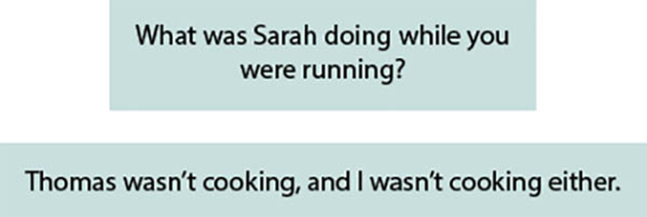

Knowing English is a skill that allows worldwide communication.
chainarong06/Shutterstock.com
In the 21st century, it is no longer easy to function in the world without the English language. Whether it is for political reasons, for work purposes, for entertainment, for traveling, or for accessing information and culture, it is omnipresent in the contemporary world: as a fundamental communication tool in important organizations such as the United Nations (UN); in sports events like the Olympics or the FIFA World Cup; in education and academic environments (since the majority of the scientific publications is written in English); and also on a daily basis.
Let’s think about Brazil. When taking a walk around a big city, we may notice how the language is spread all around, on shop windows, in the names of stores and restaurants, outdoors, car stickers, T-shirt sayings, sports names, song lyrics, and magazines titles at newsstands. Additionally, this global language is part of the population’s routine, on videogames, movies, TV shows, social networks, business expressions, slangs and idiomatic expressions, and so on.
In order to avoid serious communication breakdowns, you must not only be familiar with the structure and functions of the language, but also care for the non-verbal communication and cultural manifestations that come along with the language, because these elements show you a lot about the language itself.
- Can you think of examples of the use of English language in our daily lives?
- Can you point out at least two situations in which you find the need to communicate in English?
- In which ways the reading of authentic texts can help someone in the process of learning a foreign language?
 Neste capítulo serão abordadas as habilidades
EM13LGG401,,
EM13LGG402,
EM13LGG403.
Neste capítulo serão abordadas as habilidades
EM13LGG401,,
EM13LGG402,
EM13LGG403.
Simple Past × Past Continuous tense
Use
The Simple Past and the Past Continuous help us to show how two past actions or situations were connected. We use these two tenses together to indicate that the Simple Past action happened in the middle of the Past Continuous action, while it was in progress.
We use the Past Continuous to show a continuing (long) action being interrupted by a short past action. When forming sentences, we use was / were + verb + ing in the independent clause and the Simple Past in the dependent clause. The order may vary, but if we start the sentence with a dependent clause, we must use a comma.
Look at the examples:
It is good to know that some verbs are commonly used to express short actions, and if you memorize them it will be easier to identify if a sentence needs the Past Continuous or the Simple Past. Some of these verbs are: call, ring, arrive, land, hit and go out.
Parallel actions
When you use the Past Continuous with two actions in the same sentence, it expresses the idea that both actions were happening at the same time.
When and while
Clauses are groups of words which have meaning, but are often not complete sentences. Some clauses take the word when, such as:
Other clauses take the word while , such as:
Maria took a selfie while Paxton was eating pizza.
Jacob Lund/Shutterstock.com
When
We use when to introduce a single completed event that takes place in the middle of a longer activity. In these cases, when is usually followed by the Simple Past:
While
We use while to express “during the time that”. It is usually followed by the Past Continuous:
We can also use while to talk about two longer events or activities happening at the same time in the past:
Interview
Walk around the classroom and find out what your classmates were doing at specific times. Perform an interview and take notes, asking questions such as the following:
As
We can use as to introduce two events happening at the same time. After as , we can use a simple or continuous form of the verb. The continuous form emphasizes an action that interrupts or occurs during the progress of another action:
The Mysterious Stalker, oomongzu.
Watch this short animation video and have fun while practicing the Past Continuous Tense vs. Past Simple.
Available at: <http: //p.p4ed.com/HFXGF>. Accessed on: July 13rd, 2021.
Grammaring
1
Choose the best alternative to complete the spaces.
- I_________my new job last week.
- While I was taking a shower, I suddenly _________ a brilliant idea.
- He didn’t hear the doorbell ring. He _________ to really loud rock and roll music.
- I didn’t buy anything from the shopping list. They _________ the store when I got there.
- Dad told us to stop what we _________.
- _________ the book you were looking for in the bookshop yesterday?
- When I heard the phone ring, I _________ it immediately.
( ) started
( ) was starting
( ) had
( ) was having
( ) listened
( ) was listening
( ) already closed
( ) were already closing
( ) did
( ) were doing
( ) Did you find
( ) Were you finding
( ) answered
( ) was answering
2
The chart contains the Simpsons’ schedule for yesterday morning. Write sentences in the Past Continuous describing their activities.
| Time | Mr. Simpson | Mrs. Simpson |
|---|---|---|
| 7:00 a.m. – 7:15 a.m. | showered | got ready for work |
| 7:15 a.m. – 7:20 a.m. | made breakfast for the kids | got ready for work |
| 8:00 a.m. – 8:30 a.m. | had breakfast | had breakfast at work |
| 9:00 a.m. – 12:00 a.m. | wrote emails | taught History class |
| 12:00 p.m. – 1:00 p.m. | had lunch at a restaurant | had lunch at work |
- At 7:10, Mr. Simpson
- At 7:15, Mrs. Simpson
- At 8:15, Mr. and Mrs. Simpson
- At 10:00, Mr. Simpson
- At 11:00, Mrs. Simpson
3
Complete the following sentences using the correct tenses of the verbs in parentheses.
- Timothy (work)______ in his backyard last night when he (hear)______ a strange noise. He (put)______ down his gardening tools and (go)______ to the front yard. While he (look)______ around, someone (run)______ out of his house. Timothy immediately (call)______ the police department. He (tell)______ the officer that the thief (wear)______ a red coat and yellow pants.
- When Amanda (arrive)______ at the concert, her friends (wait)______ for her outside.
- Danielle (break)______ her wrist while she (play)______ rugby.
- Pluto (get)______ in the kitchen while Mrs. Anniston (cook)______ and the kids (set)______ the table.
- Paul (stay)______ home yesterday because he (not – feel)______ very well.
4
Use “when” or “while” to fill in the gaps correctly.
- I was peeling oranges ______ James arrived.
- ______ I heard the doorbell, I went to the door.
- ______ Juliet was washing her hair, I made dinner.
- I was at the post office ______ I met Joan.
- ______ the customer was helping the salesman, the thief broke the glass.
- ______ you saw Keith, was he skating?
- I was in the shop ______ someone stole my bag.
- I hurt my back ______ I was trying to lift the piano.
- ______ we were standing outside the cinema, someone shouted my name.
5
Use the verbs from the chart in the correct tenses to complete the story. You may need to repeat some verbs.
have – hear – sit – draw – be – call – sleep – wait – mention – hang – talk – tell – make – suggest – cut
Last night, while I was getting ready for dinner, Sue me ______. She said she ______ to me on her cell phone from her mechanics classroom at college. I asked her if she ______ for class, but she said that the professor was teaching while she ______ to me. I couldn’t believe she ______ a phone call during the class. I asked her what was going on.
She said the professor was so boring that several students ______ in class. Some of them ______ about their plans for vacation and the boy next to her ______ on his notebook. When Sue ______ me she was not happy with the class, I ______ that my mechanics professor was quite good and ______ that she change to my class. I also ______ her that she ______ impolite and that she ______ to respect the professor no matter what.
While we were talking, I ______ her professor yell, “Miss, are you talking on the phone?” Suddenly, the line went dead. I ______ up the phone and went to the kitchen to make dinner. As I ______ tomatoes and potatoes for a soup, the phone rang once again. It was Sue, but this time she ______ in class.
1
UFES 2016 In the short texts, people describe situations involving cultural misunderstandings in foreign countries. Fill in the gaps using the cues in parentheses.
A British colleague invited me to join his friends after work. We _________(GO) to a pub where he bought me a drink and he suggested a meal in a restaurant. At the end of the meal, I was very surprised to see everyone _________(TAKE OUT) their wallets to pay the waiter. My friend expected me to pay as well, but I feel it was very mean of him not to pay for me as he invited me. (Kenji, Japan)
I _________(VISIT) Germany for the first time and I decided to pay my most important customer a visit. She _________(INVITE) me for quite some time. I decided to take her a beautiful bunch of twelve red roses and her husband a bottle of wine. I gave her the flowers, but she just looked embarrassed. (Douglas, Scotland)
When I was at university in England, my English tutor invited a group of us to her home. I didn’t want to make any mistakes, such as _________(STAY) too late. So when she brought us a drink before we began the meal, I said, ‘Thank you for inviting us to your home and for inviting us to dinner. Could you tell me when we can leave?’ She laughed and said, ‘So, you can’t wait _________(LEAVE)?’. (Lu, China)
I have recently arrived in the USA and don’t have many friends yet, so, I was pleased to meet a really nice American in the college cafeteria the other week. We had a long conversation, she told me the story of her life, she showed me photos of her family, and left me her address. The following week I saw her, but although she smiled and said ‘Hi!’ in a friendly way, she went and sat with other friends. I feel very hurt. _________(SHE/EXPECT) me to call on her? I feel I need an invitation. (Hana, Lebanon)
I was sitting in a bus in Bristol when an elderly lady got on the bus. It _________(BE) crowded and there weren’t any seats. A middle-aged man said very loudly, ‘Would you offer the lady your seat, please?’ Why didn’t he give her his seat? (Carlos, Spain)
Unicamp 2020 Texto para a questão 2.
O site “Urban Dictionary” apresenta definições de palavras e expressões que, apesar de serem usadas popularmente, ainda não foram oficialmente dicionarizadas. O exemplo abaixo faz alusão ao Brexit, isto é, à saída do Reino Unido da União Europeia.

(Disponível em https://www.urbandictionary.com/define.php?term=Doing%20the%20Brexit. Acessado em 11/05/2019.)
2
Com relação ao exemplo apresentado, entende-se que Taylor estava “fazendo o Brexit” porque
- se despediu, mas demorou a ir embora da festa.
- saiu “à francesa” da festa, isto é, saiu discretamente.
- se despediu, mas anunciou que demoraria a sair da festa.
- saiu “à francesa” da festa, isto é, saiu depois de muito tempo.
Unicamp 2020 Texto para a questão 3.
There are approximately 70 million pet dogs and 74 million pet cats in the U.S., a country where 20 men and women are assaulted per minute. In one survey, 71 percent of domestic violence victims reported that their abuser also targeted pets. In one study of families under investigation for suspected child abuse, researchers found that pet abuse had occurred in 88 percent of these families.
(Adaptado de https://www.humanesociety.org/resources/animal- cruelty-facts-and-stats. Acessado em 11/05/2019.)
3
O objetivo do texto é destacar a relação entre
- aumento do número de animais domésticos e de casos de crueldade contra os animais.
- violência doméstica e famílias investigadas por crueldade contra os animais.
- condenações por abuso infantil e crueldade contra os animais.
- casos de violência doméstica e crueldade contra os animais.